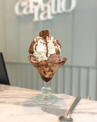
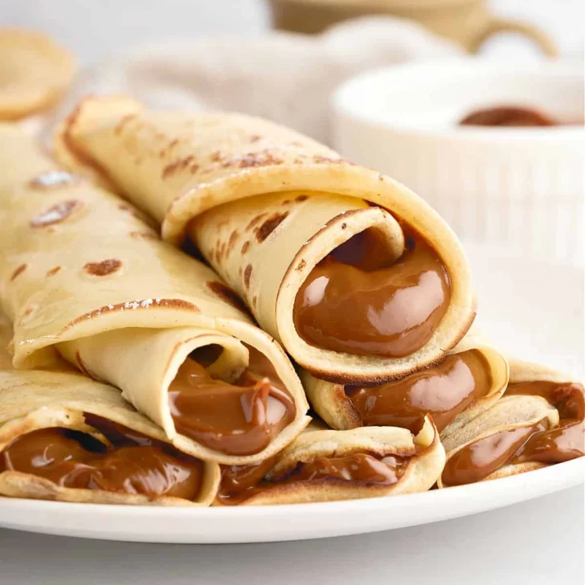
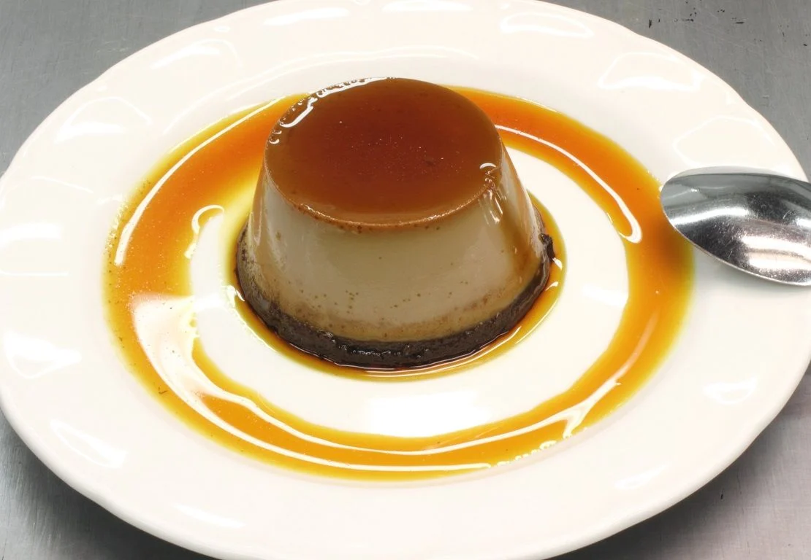

Entradas

Helado

Panqueques

Flan
Bonus track
¡Receta de flan casero!
Ingredientes
- 5 huevos
- 1 litro de leche
- 200 g de azúcar
- 1 cucharada de esencia de vainilla
Pasos a seguir
- En una sartén o flanera, poné el azúcar con el agua. Luego calentá a fuego medio hasta que tome un color dorado (sin revolver). Por último volcá el caramelo caliente en el molde cubriendo la base y un poco los bordes. Reservá.
- En un bowl, batí ligeramente los huevos, agregá el azúcar y la esencia de vainilla y sumá la leche y mezclá suavemente (sin hacer espuma).
- Cociná a baño maría en horno a 160–170°C durante aproximadamente 1 hora. Para saber si está listo: insertá un cuchillo, si sale limpio, está perfecto.
- Dejá enfriar a temperatura ambiente y llevá a la heladera por al menos 4 horas (ideal de un día para el otro).